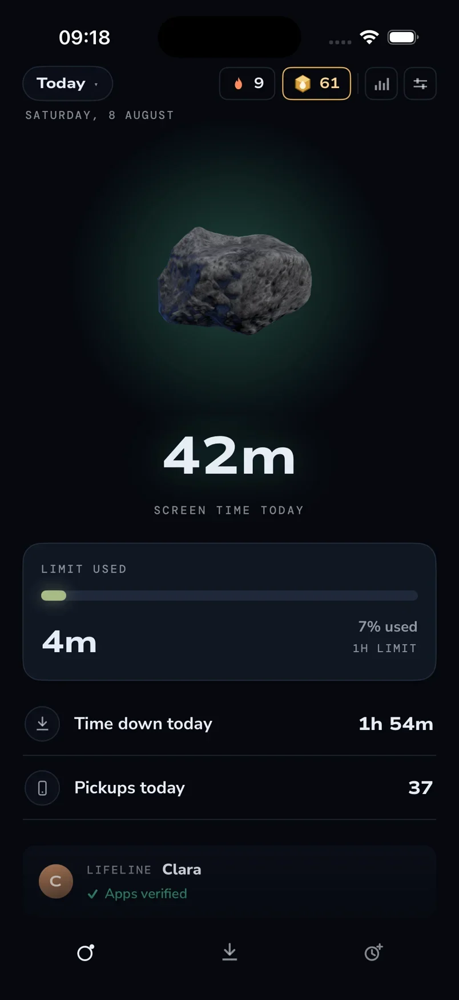
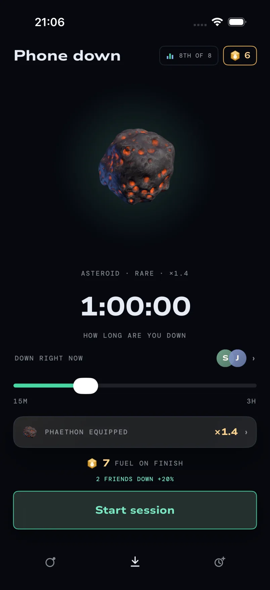

The way past your limit is not a button. It is a person.
Eclipse puts a hard daily limit on the apps that eat your day. When it runs out, it runs out. There is no "15 more minutes", no talking yourself into it at 1am. If you genuinely need more time, you ask a friend, and they decide.
Free, iPhone, iOS 26 or newer.
No subscription and no trial.

That is how long the average American teenager spends on social media every day. Not on their phone. On social media alone. It comes to 1,752 hours a year, and measured against the roughly sixteen hours anyone is actually awake, that is 109 whole days of waking life, gone.
Gallup, Familial & Adolescent Health Survey, 2023
Why a friend
Willpower is the thing that already failed.
Every screen time app asks the same person who opened Instagram to also be the person who stops. That is you against yourself at your worst moment, and the average person has been losing that argument for years. It is not a character flaw. These apps are built by thousands of people whose whole job is to keep you scrolling.
So Eclipse changes who is in the room. Your limit, your streak and your kept days are visible to a handful of friends you chose. You see which limits your friends have set for themselves, and they see yours. Not a feed, not followers, not strangers: three or four people who will notice. Breaking a promise is easy when nobody is watching and surprisingly hard when someone is.
This is the oldest trick in behaviour change, and it is the one that works. It is why people run with a friend instead of alone, and why the gym buddy who is waiting outside beats every alarm you have ever set.
Inside Eclipse
One promise. Three places to keep it.
These are current screens from the app, not illustrations. Move through them to see what Eclipse keeps close and what it deliberately leaves out.
When time is up
A wall, and one human door.
Most apps hand you an escape hatch and call it flexibility: a snooze, an "ignore limit", a setting you can raise in four taps at exactly the moment you should not. Eclipse closes those. When today's budget is spent, your apps are hard blocked.
-
Two minutes, right now
For the message that genuinely cannot wait. Two minutes open instantly in the app you tapped from, nothing to watch. Once every half hour, at most three times a day.
-
Ask a friend
The real emergency door. Ask for fifteen minutes, an hour, or the rest of the day, and say why.
Raising your limit is always possible, because this is your phone. It just costs your streak. Tightening is free. Loosening is not.
Two things make that a real decision rather than a reflex. Your lifeline will see your increase, and a new limit applies from the next 6am, never today. Today keeps the promise you made yesterday.
Six in the morning
Your day resets at 6am, not midnight.
A budget that refills at midnight refills at the exact moment it can do the most damage. Conventional screen time limits do this, and it is wrong.
Eclipse rolls the day over at six in the morning. If you hit your limit at 11pm, midnight is not a reward, and the new day arrives when you are awake and it can actually do you some good. Your sleep is most of the reason to do any of this in the first place.
Phone down
Put it down, and let something remain.
A session shields the whole phone: every app and every notification is blocked until the timer runs out. Finish it and you earn fuel for expeditions: asteroids, moons, stars and galaxies that live on Home. Stop early and it pays nothing. Try the pacing below.
Plan a session

Private by construction.
Your screen time is measured by iOS itself, on your phone. Eclipse has no advertising or behavioural-analytics SDK. Apple's frameworks provide the totals needed to enforce your promise, not a browsable history of what you looked at. Optional social features travel through your private iCloud account; a random install identifier contributes only anonymous aggregate usage counters.
Your friends see the promise you made and whether you kept it: your limit, your streak, kept days and whether you are currently phone down. They never see your screen time, the apps you picked, or anyone else in your circle. The circle is optional too, and skipping it costs nothing.
Start with one friend and a number you can live with.
iPhone, iOS 26 or newer. The beta is capped at 100 people.